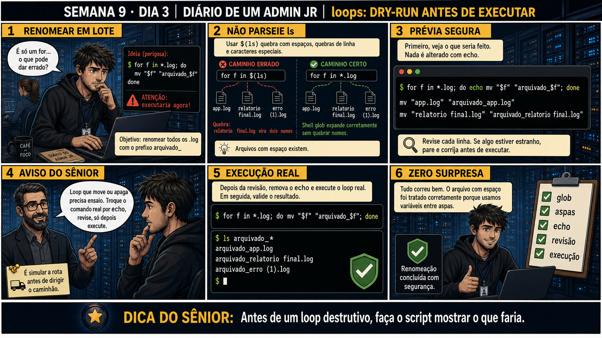

DIARIO DE UM ADMIN JR. | FASE 1 — LINUX, DO BÁSICO AO AVANÇADO
🔗 Conecta com ontem: condicionais protegem contra dados inesperados. Hoje o
risco muda de escala: um loop repete uma ação em VÁRIOS arquivos de uma vez — se o comando dentro dele
estiver errado, o erro também se repete várias vezes, rápido demais pra perceber a tempo.
🔓 Privilégio de hoje: escrever loops que renomeiam ou movem arquivos em lote, com
segurança. Você ganha o hábito de sempre simular (dry-run) um loop destrutivo antes de rodá-lo de verdade.
Semana 9 · Dia 3 | Nível Júnior
Loops: Dry-Run Antes de Executar
antes de um loop destrutivo, faça o script mostrar o que faria
ANTES DE ALTERAR, OBSERVE. DEPOIS DE ALTERAR, VALIDE.

1. O chamado
Você precisa renomear todos os arquivos .log de uma pasta, adicionando o
prefixo arquivado_. A ideia parece simples — mas um dos arquivos tem espaço no nome
(relatorio final.log), e a forma errada de escrever o loop quebra justamente nesse caso.
💡 Passa o mouse nas palavras destacadas pra ver uma dica rápida — clica se quiser a explicação completa com analogia.
2. O sênior te conta
Quarta-feira, Semana 9
Ontem você aprendeu a proteger condicionais com aspas. Hoje o risco muda de escala: um loop repete uma
ação em vários arquivos de uma vez — se o comando dentro dele estiver errado, o erro também se repete
várias vezes, rápido demais pra perceber a tempo de parar.
O chamado que me ensinou isso foi renomear um lote de arquivos .log, adicionando o prefixo
arquivado_. Escrevi o loop mais óbvio que existe: for f in $(ls); do mv "$f"
"arquivado_$f"; done. Rodei num diretório de teste com poucos arquivos, funcionou, e me senti
confiante. Rodei no diretório real. No meio da execução, apareceram dois arquivos estranhos:
relatorio e final.log — sendo que o arquivo original se chamava
relatorio final.log, um nome só, com espaço.
O problema era o $(ls). Ele captura a saída do ls como TEXTO, e o
for quebra esse texto em cada espaço ou quebra de linha — exatamente como quebraria uma
frase em palavras separadas. relatorio final.log virou dois itens distintos, sem eu pedir
isso. A correção certa é usar glob — for f in *.log — que é expandido diretamente
pelo shell, preservando cada nome de arquivo como uma unidade única, espaço incluído.
Mas a lição mais importante daquele dia não foi sobre glob — foi sobre nunca rodar um loop destrutivo
(que move, apaga ou sobrescreve) sem primeiro ver o que ele faria. Trocar o comando real por
echo temporariamente — um dry-run — e revisar a saída linha por linha antes de deixar o
loop realmente agir. Hoje você pratica exatamente esse ritual: escrever o loop certo, simular antes,
revisar, e só então executar de verdade.
3. Decodificador de conceitos
Clica em qualquer termo pra ver a definição completa e uma analogia do dia a dia:
4. Ferramentas e leitura da evidência
Comando
O que observar e por que importa
for f in *.log; do echo mv "$f" ...; done
Dry-run — imprime o comando com echo, sem executar mv de verdade.
for f in *.log; do mv "$f" ...; done
Execução real, depois de revisar a saída do dry-run.
$ for f in *.log; do echo mv "$f" "arquivado_$f"; done
mv "app.log" "arquivado_app.log"
mv "relatorio final.log" "arquivado_relatorio final.log"
mv "erro (1).log" "arquivado_erro (1).log"
$ for f in *.log; do mv "$f" "arquivado_$f"; done
$ ls arquivado_*
arquivado_app.log
arquivado_relatorio final.log
arquivado_erro (1).log
5. Laboratório guiado — pegue na mão, comando por comando
Resultado esperado: 3 arquivos de teste criados, um deles com espaço no nome.
Por que fizemos isso: incluir de propósito um nome com espaço é o que reproduz exatamente a armadilha da história — sem esse caso, o bug nunca aparece nos testes.
Cilada comum: testar só com nomes simples (sem espaço) — assim como na primeira tentativa da história, o bug só aparece com dados reais e variados.
Ação: reproduza o bug com for f in $(ls), usando só echo (nunca mv direto).
$ for f in $(ls *.log); do echo mv "$f" "arquivado_$f"; done
Resultado esperado: o arquivo "relatorio final.log" aparece quebrado em dois comandos separados — "relatorio" e "final.log" tratados como itens distintos.
Por que fizemos isso: ver o bug acontecer com echo, sem risco nenhum, é o que fixa por que $(ls) é perigoso — a mesma lição cara que a história de hoje contou.
Cilada comum: rodar esse teste sem o echo, direto com mv — mesmo em ambiente de teste, é melhor praticar sempre simular primeiro, reflexo que você vai levar pra produção.
Ação: rode o mesmo teste com glob (*.log) e compare o resultado.
$ for f in *.log; do echo mv "$f" "arquivado_$f"; done
Resultado esperado: os três arquivos aparecem corretamente, "relatorio final.log" tratado como um único item, sem quebrar.
Por que fizemos isso: comparar lado a lado o comportamento errado ($(ls)) com o correto (glob) é a prova mais direta de por que a troca de sintaxe resolve o problema.
Cilada comum: esquecer as aspas em "$f" mesmo usando glob — o glob resolve a expansão do padrão, mas a variável ainda precisa de aspas ao ser usada dentro do loop.
🧑🏫 Aqui entra o Mentor (em breve): se um loop não se comportar como esperado com nomes de arquivo incomuns, este é o ponto onde o chat com o Sênior-IA vai ajudar a debugar.
Ação: revise a saída do dry-run, remova o echo, e execute o loop de verdade.
$ for f in *.log; do mv "$f" "arquivado_$f"; done
$ ls arquivado_*
Resultado esperado: os três arquivos renomeados com o prefixo "arquivado_", incluindo o de nome com espaço, intacto.
Por que fizemos isso: esse é o ciclo completo — simular, revisar, e só então executar — exatamente o que a Questão 2 vai testar como próximo passo correto.
Cilada comum: esquecer de remover o echo e achar que "já rodou" — o dry-run nunca move nada de verdade, é preciso o passo extra de rodar sem ele.
# anote no seu diário de bordo:
Dry-run: for f in *.log; do echo mv "$f" "arquivado_$f"; done
Revisão: 3 linhas conferidas, nome com espaço tratado corretamente
Execução real: mesmo loop sem echo
Validado: ls arquivado_* confirma os 3 arquivos renomeados
Resultado esperado: registro completo reproduzindo o painel 6 da prancha de hoje.
Por que fizemos isso: esse registro documenta exatamente a sequência de segurança que evita repetir o erro da história — é o histórico que vira referência da próxima vez.
Cilada comum: documentar só o resultado final, sem registrar que o dry-run foi feito e revisado — sem esse detalhe, não há prova de que o processo seguro foi seguido.
6. Antes de ver as opções — tenta responder
🧠 Recall ativo: por que for f in $(ls) é uma forma perigosa de percorrer arquivos,
e for f in *.log não tem o mesmo problema?
$(ls) quebra nomes de arquivo em qualquer espaço ou quebra de linha, transformando
relatorio final.log em dois "arquivos" separados por engano.
*.log (glob) é
expandido pelo próprio shell, preservando o nome completo como um único item, mesmo com espaço.
QUESTÃO 1 de 3
7. Questão comentada — clica numa alternativa
Você precisa renomear todos os .log de uma pasta, incluindo um com espaço no
nome. Qual é a forma correta e segura de escrever o loop?
💡 Analogia do Sênior para Fixar: O loop 'for host in $(cat lista.txt)' é a linha de montagem robotizada: repete exatamente a mesma sequência de checagens para cada servidor da lista.
QUESTÃO 2 de 3 — cenário de erro real
7.1 O dry-run mostra os três comandos exatamente como esperado — o que fazer a seguir?
A saída do echo mv ... mostra os três arquivos, incluindo o de nome com espaço, tratados
corretamente como itens únicos.
Qual é o próximo passo correto antes de considerar a tarefa concluída?
💡 Analogia do Sênior para Fixar: Implementar a flag '--dry-run' no script é como o simulador de voo: executa toda a lógica e imprime na tela o que seria feito sem alterar nenhum arquivo real.
QUESTÃO 3 de 3 — detalhe que confunde todo iniciante
7.2 "*.log sempre pega TODOS os arquivos .log, mesmo em subpastas?"
Um colega assume que for f in *.log também vai encontrar arquivos .log dentro
de subpastas, não só na pasta atual.
Essa suposição está correta?
💡 Analogia do Sênior para Fixar: O comando 'while read -r linha' é o leitor de código de barras: lê o arquivo linha por linha com segurança, sem engolir espaços em branco ou barras invertidas.
8. Procedimento profissional
Use glob (*.log) em vez de $(ls) pra percorrer arquivos com segurança.
Sempre coloque a variável do loop entre aspas.
Rode primeiro com echo (dry-run), revisando a saída linha por linha.
Só remova o echo e execute de verdade depois da revisão.
Valide o resultado final com ls, confirmando que tudo saiu como esperado.
Prevenção
Adote um padrão de equipe: nenhum loop destrutivo entra em produção sem antes rodar como
dry-run (com echo) e ter a saída revisada por outra pessoa. Duas revisões — a sua e a de um colega — pegam
casos extremos (como nomes com espaço) que passam despercebidos numa revisão solitária.
9. Validação e encerramento
*.log (glob) foi usado em vez de $(ls) pra percorrer os arquivos.
A variável do loop estava entre aspas em todas as operações.
Um dry-run com echo foi rodado e revisado antes da execução real.
O resultado foi validado com ls depois da execução.
Rollback e limites
Um mv em lote pode ser revertido renomeando de volta, mas só se você souber
exatamente quais arquivos e nomes originais foram alterados — é por isso que documentar o dry-run antes de
executar é tão importante, ele vira o registro do que foi feito.
💡 Sobre repetição espaçada: "simule antes de executar" conecta diretamente
com --dry-run do rsync (Semana 6) e sed sem -i (Semana 8) — o mesmo princípio aplicado agora a loops. O
Anki vai conectar os três.
10. Resposta final
Alternativa correta: B. Nesta aula, a decisão correta foi
for f in *.log; do mv "$f" "arquivado_$f"; done, usando glob em vez de $(ls), com aspas. O ponto
central do caso é este: antes de um loop destrutivo, faça o script mostrar o que faria.
🔓 O que você desbloqueou hoje
Capacidade de escrever loops seguros que lidam corretamente com nomes de
arquivo reais. Amanhã você aprende funções — pra parar de copiar e colar o mesmo bloco de código repetidas
vezes.